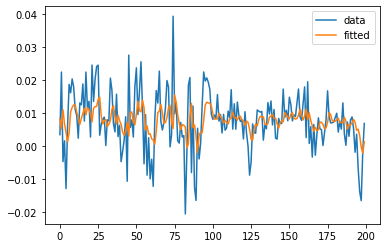

Granger Causality and Hypothesis Testing
Last edited on: August 27, 2021 3:24 PM
This is the reading notes on Introduction to Modern Time Series Analysis by by G. Kirchgässner and Jürgen Wolters. This is done as a preparatory work for the project on detecting causal structure in time series in Part IIB of the Engineering Tripos at the University of Cambridge.
Linear Models
Simple linear regression
If we have a simple linear regression model
$$y_i= a + bx_i+ ε_i$$
then we can reparameterise it to
$$y_i= a^\prime + b(x_i− \bar{x}) + ε_i$$
where $\bar{x}=\sum x_i/n$ and $a^\prime = a + b \bar{x}$.
In matrix form,
$$X = \begin{pmatrix}
1 & (x_1 - \bar{x}) \\
\vdots & \vdots \\
1 & (x_n - \bar{x})
\end{pmatrix}$$
Since $\sum (x_i− \bar{x}) = 0$, in $X^T X$, the off-diagonals are all $0$, and we have
$$X^T X = \begin{pmatrix}
n & 0 \\
0 & S_{xx}
\end{pmatrix}$$
where $S_{xx} = \sum (x_i - \bar{x})^2$.
So
$$\hat{\beta} = (X^T X)^{-1} X^T Y = \begin{pmatrix}
\bar{y} \\
\frac{S_{xy}}{S_{xx}}
\end{pmatrix}$$
where $S_{xy} = \sum y_i (x_i - \bar{x})$.
Hence the estimated intercept is $\hat{a}^\prime= \bar{y}$, and the estimated gradient is
$$\begin{aligned}
\hat{b} &=\frac{S_{x y}}{S_{x x}} \\
&=\frac{\sum_{i} y_{i}\left(x_{i}-\bar{x}\right)}{\sum_{i}\left(x_{i}-\bar{x}\right)^{2}} \\
&=\frac{\sum_{i}\left(y_{i}-\bar{y}\right)\left(x_{i}-\bar{x}\right)}{\sqrt{\sum_{i}\left(x_{i}-\bar{x}\right)^{2} \sum_{i}\left(y_{i}-\bar{y}\right)^{2}}} \times \sqrt{\frac{S_{y y}}{S_{x x}}} \\
&=r \times \sqrt{\frac{S_{y y}}{S_{x x}}}
\end{aligned}
$$
So the gradient is the Pearson product-moment correlation coefficient $r$ times the ratio of the empirical standard deviations of the $y$’s and $x$’s.
Hence we get $\operatorname{cov}(\hat{\boldsymbol{\beta}})=\left(X^{T} X\right)^{-1} \sigma^{2}$, and so from our expression of $\left(X^{T} X\right)^{-1}$,
$$
\operatorname{var}\left(\hat{a}^{\prime}\right)=\operatorname{var}(\bar{y})=\frac{\sigma^{2}}{n}, \quad \operatorname{var}(\hat{b})=\frac{\sigma^{2}}{S_{x x}}
$$
The residual sum of squares is
$$\operatorname{RSS}=(Y-X \hat{\boldsymbol{\beta}})^{T}(Y-X \hat{\boldsymbol{\beta}}) \sim \sigma^{2} \chi_{n-p}^{2}$$
Inference for $\boldsymbol{\beta}$
We know that $\hat{\boldsymbol{\beta}} \sim N_{p}\left(\boldsymbol{\beta}, \sigma^{2}\left(X^{T} X\right)^{-1}\right)$. So
$$
\hat{\beta}_{j} \sim N\left(\beta_{j}, \sigma^{2}\left(X^{T} X\right)_{j j}^{-1}\right)
$$
The standard error of $\hat{\beta}_{j}$ is defined to be
$$
\operatorname{SE}\left(\hat{\beta}_{j}\right)=\sqrt{\tilde{\sigma}^{2}\left(X^{T} X\right)_{j j}^{-1}}
$$
where $\tilde{\sigma}^{2}=\operatorname{RSS} /(n-p)$ is an unbiased estimator of $\sigma^{2}$. $\tilde{\sigma}$ is often known as the residual standard error on $n-p$ degrees of freedom.
Then
$$
\frac{\hat{\beta}_{j}-\beta_{j}}{\operatorname{SE}\left(\hat{\beta}_{j}\right)} \sim t_{n-p}
$$
So a $100(1-\alpha) %$ confidence interval for $\beta_{j}$ has end points $\hat{\beta}_{j} \pm \operatorname{SE}\left(\hat{\beta}_{j}\right) t_{n-p}\left(\frac{\alpha}{2}\right)$.
In particular, if we want to test $H_{0}: \beta_{j}=0$, we use the fact that under $H_{0}$, $\frac{\hat{\beta}_{j}}{\operatorname{SE}\left(\hat{\beta}_{j}\right)} \sim t_{n-p} .$
Hypothesis Testing
Hypothesis testing in general linear models
Suppose $\underset{n \times p}{X}=\left(\underset{n \times p_{0}}{X_{0}} \underset{n \times\left(p-p_{0}\right)}{X_{1}}\right)$ and $\mathbf{B}=\left(\begin{array}{c}\boldsymbol{\beta}_{0} \\ \boldsymbol{\beta}_{1}\end{array}\right)$, where $\operatorname{rank}(X)=$
$p, \operatorname{rank}\left(X_{0}\right)=p_{0}$
We want to test $H_{0}: \boldsymbol{\beta}_{1}=0$ against $H_{1}: \boldsymbol{\beta}_{1} \neq 0$. Under $H_{0}, X_{1} \boldsymbol{\beta}_{1}$ vanishes
and
$$
\mathbf{Y}=X_{0} \boldsymbol{\beta}+\varepsilon
$$
Under $H_{0}$, the mle of $\boldsymbol{\beta}_{0}$ and $\sigma^{2}$ are
$$
\begin{aligned}
&\hat{\hat{\boldsymbol{\beta}}}_{0}=\left(X_{0}^{T} X_{0}\right)^{-1} X_{0}^{T} \mathbf{Y} \\
&\hat{\hat{\sigma}}^{2}=\frac{\mathrm{RSS}_{0}}{n}=\frac{1}{n}\left(\mathbf{Y}-X_{0} \hat{\boldsymbol{\beta}}_{0}\right)^{T}\left(\mathbf{Y}-X_{0} \hat{\boldsymbol{\beta}}_{0}\right)
\end{aligned}
$$
and we have previously shown these are independent.
So the fitted values under $H_{0}$ are
$$
\hat{\hat{\mathbf{Y}}}=X_{0}\left(X_{0}^{T} X_{0}\right)^{-1} X_{0}^{T} \mathbf{Y}=P_{0} \mathbf{Y}
$$
where $P_{0}=X_{0}\left(X_{0}^{T} X_{0}\right)^{-1} X_{0}^{T}$.
The generalized likelihood ratio test of $H_{0}$ against $H_{1}$ is
$$
\begin{aligned}
\Lambda_{\mathbf{Y}}\left(H_{0}, H_{1}\right) &=\frac{\left(\frac{1}{\sqrt{2 \pi \hat{\sigma}^{2}}}\right) \exp \left(-\frac{1}{2 \hat{\sigma}^{2}}(\mathbf{Y}-X \hat{\boldsymbol{\beta}})^{T}(\mathbf{Y}-X \hat{\boldsymbol{\beta}})\right)}{\left(\frac{1}{\sqrt{2 \pi \hat{\sigma}^{2}}}\right) \exp \left(-\frac{1}{\hat{\hat{\sigma}}^{2}}\left(\mathbf{Y}-X \hat{\boldsymbol{\beta}}_{0}\right)^{T}\left(\mathbf{Y}-X \hat{\boldsymbol{\beta}}_{0}\right)\right)} \\
&=\left(\frac{\hat{\hat{\sigma}}^{2}}{\hat{\sigma}^{2}}\right)^{n / 2} \\
&=\left(\frac{\operatorname{RSS}_{0}}{\operatorname{RSS}}\right)^{n / 2} \\
&=\left(1+\frac{\mathrm{RSS}_{0}-\mathrm{RSS}}{\mathrm{RSS}}\right)^{n / 2}
\end{aligned}
$$
We reject $H_{0}$ when $2 \log \Lambda$ is large, equivalently when $\frac{\mathrm{RSS}_{0}-\mathrm{RSS}}{\mathrm{RSS}}$ is large. Under $H_{0}$, we have
$$
2 \log \Lambda=n \log \left(1+\frac{\mathrm{RSS}_{0}-\mathrm{RSS}}{\mathrm{RSS}}\right)
$$
which is approximately a $\chi_{p-p_{0}}^{2}$ random variable.
So under $H_{0}$,
$$
F=\frac{\mathbf{Y}^{T}\left(P-P_{0}\right) \mathbf{Y} /\left(p-p_{0}\right)}{\mathbf{Y}^{T}\left(I_{n}-P\right) \mathbf{Y} /(n-p)}=\frac{\left(\mathrm{RSS}_{0}-\operatorname{RSS}\right) /\left(p-p_{0}\right)}{\operatorname{RSS} /(n-p)} \sim F_{p-p_{0}, n-p}
$$
Hence we reject $H_{0}$ if $F>F_{p-p_{0}, n-p}(\alpha)$. $\mathrm{RSS}_{0}-\mathrm{RSS}$ is the reduction in the sum of squares due to fitting $\boldsymbol{\beta}_{1}$ in addition to $\boldsymbol{\beta}_{0}$.
Granger Causality
The Direct Granger Procedure
To test for simple causality from x to y, it is examined whether the lagged values of x in the regression of y on lagged values of x and y significantly reduce the error variance. By using OLS, the following equation is estimated:
$$
y_{t}=\alpha_{0}+\sum_{k=1}^{k_{1}} \alpha_{11}^{k} y_{t-k}+\sum_{k=k_{0}}^{k_{2}} \alpha_{12}^{k} x_{t-k}+u_{1, t}
$$
with $k_0 = 1$. An F test is applied to test the null hypothesis, $H_0: \alpha^{1}_{12} = \alpha^{1}_{12} = \cdots = \alpha^{k_2}_{12} = 0$
1 | |

1 | |
All articles in this blog are used except for special statements CC BY-SA 4.0 reprint policy. If reproduced, please indicate source Ziyi Zhu!